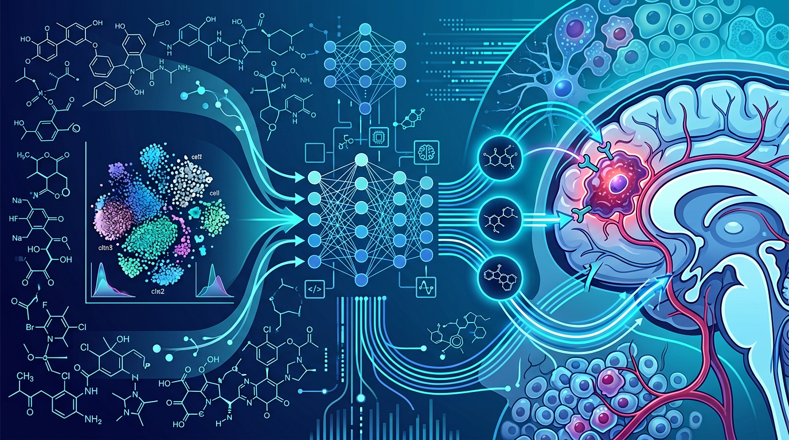

Perturbation prediction at single-cell resolution
We are building generative AI models trained on millions of single-cell profiles to predict the effects of perturbations across tumor and microenvironmental cell states.
AI-guided brain tumor research
The lab develops computational methods and data resources to advance the understanding of brain tumor biology and enable predictive modeling, mechanistic insight, and clinically actionable discovery.
Generative AI models
Predicting cellular responses to perturbations across brain tumor states
Single-cell atlases
Millions of profiles spanning malignant, immune, and neural ecosystems
Therapeutic prioritization
Drug repurposing and target discovery grounded in patient-specific data
The lab is focused on computational tools and data resources that can make brain tumor biology more predictive, mechanistic, and clinically actionable.
We are building generative AI models trained on millions of single-cell profiles to predict the effects of perturbations across tumor and microenvironmental cell states.
We combine large-scale single-cell datasets with chemical structure information to identify therapeutic candidates that can be repurposed for brain tumors.
Representative tools from the program include SCRAM, COORS, CLIPPR, CaSpER, and XCVATR, spanning cell annotation, developmental state mapping, subtyping, and RNA-inferred genomic profiling.
Browse methods →AI-guided therapeutic discovery
Our computational framework integrates large-scale single-cell tumor data, predictive AI models, and chemical representations to identify therapies that matter for brain tumors.


Assistant Professor, Neurosurgery
Akdes Serin Harmanci leads the Serin Lab at Baylor College of Medicine. The lab develops AI and single-cell genomic methods to study brain tumors, model therapeutic response, and translate molecular complexity into tractable treatment strategies.
We are interested in students, postdocs, and collaborators who want to work on AI, machine learning, single-cell analysis, cancer genomics, and computational neuro-oncology.
If you are reaching out about a position, include your CV, a short summary of your background, and a few sentences about the problems you want to work on.
View contact details